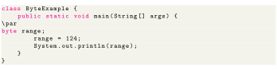

Next: short Up: 8 Primitive Data Types Previous: boolean Contents
The
data type can have values from to (8-bit signed two's complement integer). It's used instead of
 or other integer data types to save memory if it's certain that the value of a variable will be within . Default value is 0.
or other integer data types to save memory if it's certain that the value of a variable will be within . Default value is 0.
